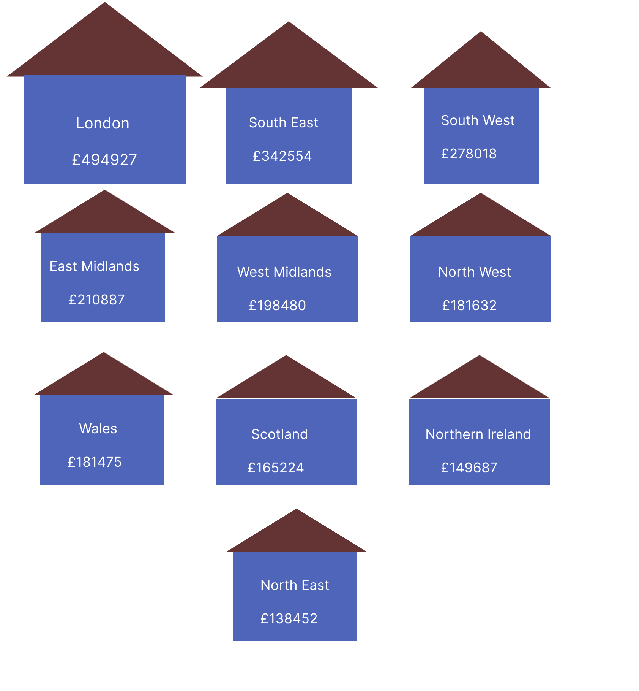

Penny Pinching Pandemic: The Reality of UK's Cost of Living
The fall in disposable income for families across the world resulting in throngs of families struggling to afford
basic
necessities of life such as energy, housing , food and beverages is what is termed as the Cost Of Living Crisis. A
myriad of factors have their fair share of contributions to this predicament we find ourselves in.
Some reasons include stagnant wages unable to keep up with rising prices and income disparity amongst sectors in
society. Here, we zero in on the United Kingdom. Below is a visual depicting the median house price across regions of the UK.

ENERGY BILLS ACROSS TIME
Here, we have a quick view of the average price of a house and the variance of energy costs over time across the UK. It is evident
that London is the most expensive place to purchase a house with prices nearly double of those in other sectors of the United Kingdom.
On the contrary, Scotland and Northern Ireland appeal to aspirant homeowners on a tight budget with prices less than 50% of the likes of London.
However, energy bills across England, Wales and Scotland have seen a price rise of over 100% since 2017 which is cause for alarm. Even Ireland has seen a 68% rise.
Now let us find out how hard a Salaryman needs to work to purchase a new house. Below we show how overall house price changes over the years
Here, we see that in 2017, the price of a house was about 130,000 GBP. Given that the hourly wage was about 12GBP at that time,you would
require at least 10 years before you can purchase a house. However, given that annual salary growth is at around 2-5% on average,
if your hourly wage is around 18 GBP by 2022, the price of a house was nearly 260,000 GBP. It would take at least 15-20 years to buy a house.
Hence, compared to the average worker in the early 2000s, you currently need to work TWICE as hard to get a house.